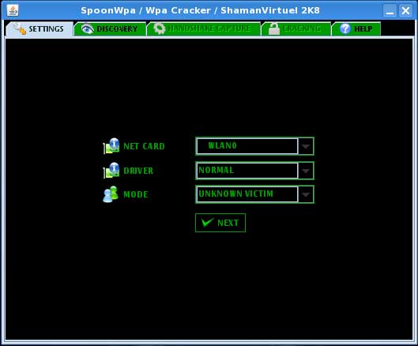
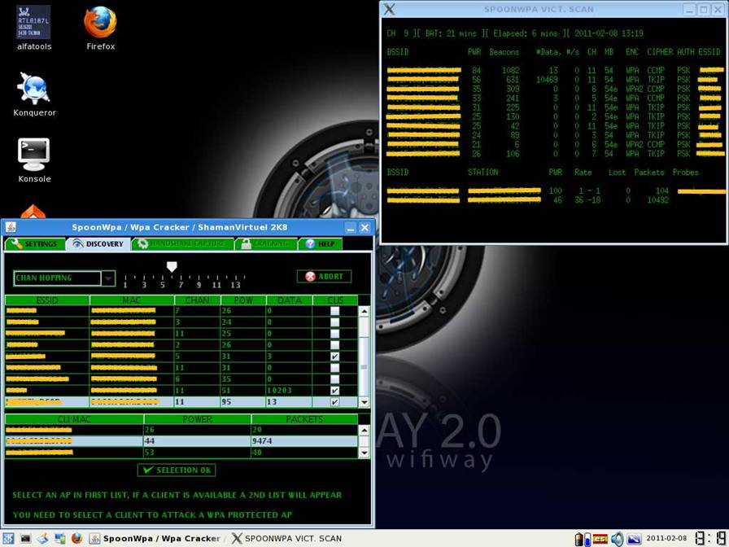
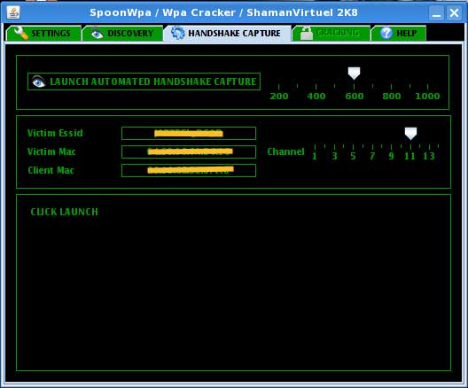
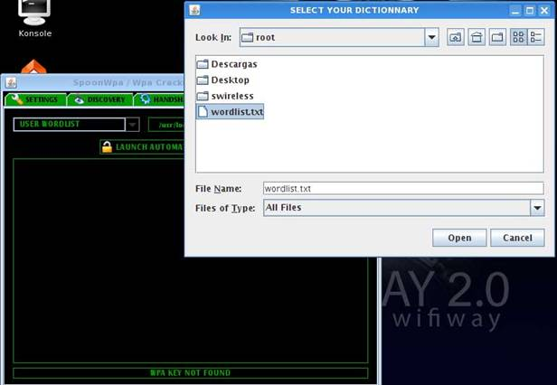
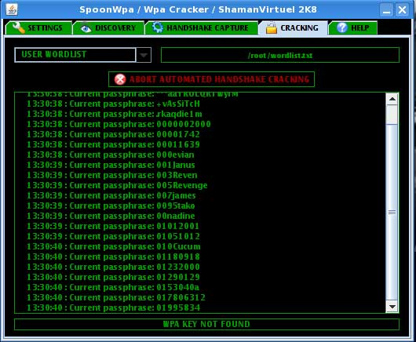
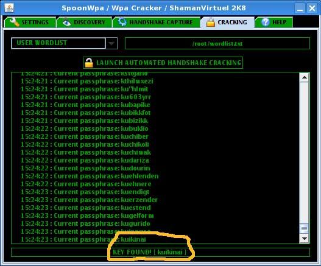

SpoonWpa
Vamos a ver como se ve la clave de una red con encriptación WPA. Para conseguirlo es imprescindible, tener buena señal, que este un cliente asociado, un buen diccionario y un rosario. Empezamos arrancando el spoonwpa vemos que es igual que el spoonwep así que seleccionamos nuestra tarjeta el tipo de driver y ponemos en modo unknown victim

Y pasamos a la siguiente pantalla donde nos van apareciendo las redes que tenemos a nuestro alrededor, aquí aparecerá la nuestra que como tenemos el otro ordenador encendido y conectado a la red, nos aparecerá con un cliente asociado. Seleccionamos nuestra red y el cliente asociado a la red, y pulsamos selection ok, si no habría un cliente asociado no nos dejaría continuar.

Y ya vamos a la
pantalla en la que nos aparece el nombre de nuestra red

En la siguiente imagen ya hemos capturado el HANDSHAKE, y nos pide que pongamos la ruta y el nombre del diccionario, donde creemos que esta la clave, yo en este caso he elegido el diccionario que viene por defecto y he añadido mi clave en la mitad del diccionario. Hay que decir que existen diccionarios que ocupan muchos gigas de espacio y que un ordenador normal puede tardar meses en poder comparar y aun así no estar la clave.

Y empieza a pasar el diccionario y vemos como va comparando cada una de las palabras hasta que da con la clave o por el contrario hasta que termina con todo el diccionario, en las imágenes podemos ver que ha tardado alrededor de 2 horas en encontrar la clave y eso que la he puesto aproximadamente en la mitad del diccionario.
 
Visto esto podemos afirmar, que si ponemos una clave con símbolos números y letras un poco larga tipo, 3r˜5®d€9A£h?@UŽ será más fácil que nos parta un rayo, a que nos saquen la clave por el método de ataque por diccionario.
Por eso debemos de huir de poner claves con nombres comunes